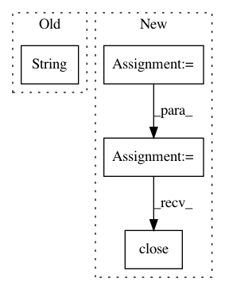

64f1c93f0e0fda2510b74621cd7758c3a73ed05a,pycox/datasets/from_kkbox.py,_DatasetKKBoxChurn,_7z_from_kaggle,#_DatasetKKBoxChurn#,160
Before Change
path=self._path_dir, force=True)
for file in files:
print(f"Extracting "{file}"...")
subprocess.check_output(["7z", "x", str(self._path_dir / (file + ".csv.7z")),
f"-o{self._path_dir}"])
print(f"Finished extracting "{file}".")
After Change
path=self._path_dir, force=True)
for file in files:
print(f"Extracting "{file}"...")
archive = py7zr.SevenZipFile(self._path_dir / f"{file}.csv.7z", mode="r")
archive.extractall(path=self._path_dir)
archive.close()
print(f"Finished extracting "{file}".")
def _csv_to_feather_with_types(self):
print("Making feather data frames...")
In pattern: SUPERPATTERN
Frequency: 3
Non-data size: 4
Instances
Project Name: havakv/pycox
Commit Name: 64f1c93f0e0fda2510b74621cd7758c3a73ed05a
Time: 2021-02-02
Author: haavard.kvamme@gmail.com
File Name: pycox/datasets/from_kkbox.py
Class Name: _DatasetKKBoxChurn
Method Name: _7z_from_kaggle
Project Name: calico/basenji
Commit Name: d6cfffd01a2a3129739c6e76f9d966287b20b7c5
Time: 2019-04-12
Author: drk@calicolabs.com
File Name: bin/basenji_predict.py
Class Name:
Method Name: main
Project Name: nilmtk/nilmtk
Commit Name: 8cbf44bc80b89c870e45403a50c1797206cfd074
Time: 2014-06-23
Author: oliparson@gmail.com
File Name: nilmtk/dataset_converters/wikienergy.py
Class Name: WikiEnergy
Method Name: download_dataset